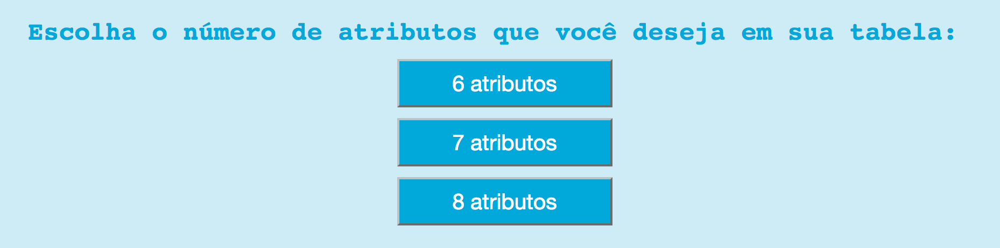
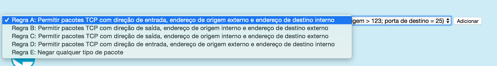
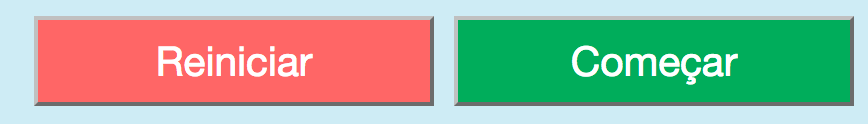
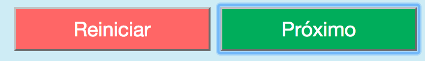
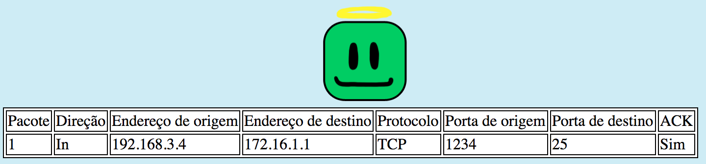
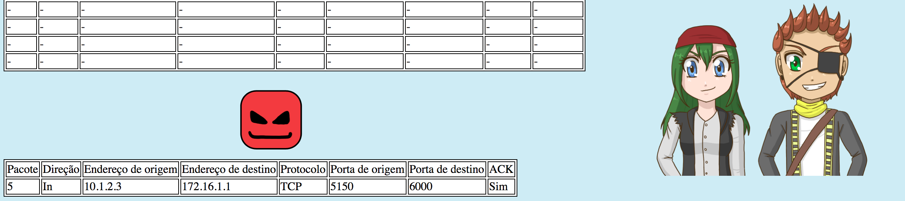

Nesta seção você encontra detalhes sobre como utilizar o simulador! Poucas explicações sobre firewalls serão dadas aqui, por isso é recomendado que você siga o tutorial caso não seja muito familiarizado com o assunto!
1. Escolha o número de atributos de sua tabela de regras.
As opções dadas nesta parte são:
* 6 atributos
* 7 atributos
* 8 atributos
A diferença entre elas será quais campos do pacote estarão disponíveis para avaliação e ela serve para que seja possível ver como
um simples campo não utilizado pode mudar muito a segurança do sistema.

2. Adicione as regras em sua tabela de regras.
O simulador possui algumas regras predefinidas baseadas nos pacotes que serão enviados pelo simulador. Você pode escolher quais dessas regras você irá usar e a ordem em que elas aparecerão da maneira que preferir. É importante notar que a ordem das regras pode mudar o resultado final!

O simulador é baseado em um default deny, ou seja, tudo o que não está definido, será negado. Isto é visível pela regra E, que barra absolutamente todo tipo de pacote, permitindo que apenas o que as regras permitem possam passar pelo firewall. Outra maneira de implementar este sistema seria um default permit, ou seja, tudo o que não está definido, será aceito, que possui um pior nível de segurança que o default deny.
3. Inicie a simulação e/ou reinicie a qualquer momento.

Para iniciar a simulação, basta clicar no botão verde Começar e prosseguir apertando o botão verde Próximo.

Caso seja necessário reiniciar a simulação, a qualquer momento é possível realizar isso através do botão vermelho Reiniciar.
4. Tipos de pacotes enviados.
A simulação possui dois tipos de pacotes, os verdes que são pacotes não nocivos enviados por alguma aplicação.

Os pacotes vermelhos que se tratam de pacotes nocivos enviados por atacantes que aparecem no sistema como dois piratas.
